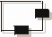
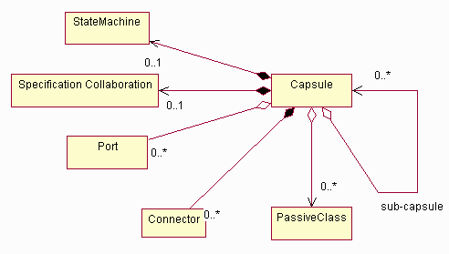
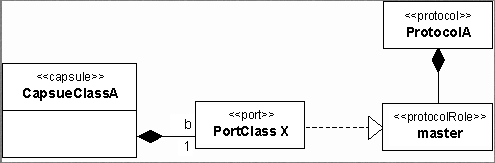
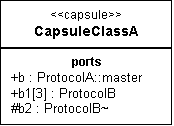
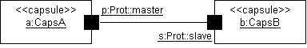
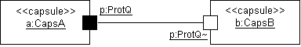
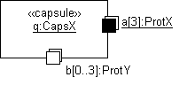

| Артефакт: Капсула |
|  |
|
| Артефакт-контейнер | ||
|---|---|---|
| Роли | Ответственный: | Изменен: |
| Задачи | Вход для:
| Выход из: |
| Основное описание | Капсулы представляют определенный шаблон структуры и состава классов, проверенный при моделировании и проектировании систем, имеющих высокую степень параллелизма. Применение капсулы как сокращенной нотации для определенного проверенного шаблона проектирования облегчает проектирование и меньше подвержено ошибкам. Капсула представляется как Класс, определяемый как <<капсула>>. Капсула является составным элементом, как показано на рисунке ниже.  Состав капсулы Как указано выше, капсула может иметь порты и может "содержать" пассивные классы и/или вложенные капсулы. Она также может иметь конечный автомат, который полностью описывает алгоритм работы капсулы. Конкретная таксономия капсул и различные способы их использования обсуждаются в Рекомендации: Капсула. |
|---|
| Опции представления | Представление UML: Класс, представляемый как <<капсула>>. Обратите внимание, что это представление основано на
нотации UML 1.5. Большую часть этого можно представить в UML 2.0, используя Концепции: Структурный
класс. Дополнительная информация приведена вРазличиях между UML 1.x и UML 2.0 .
Капсула является составным элементом, как показано на рисунке ниже.
Состав капсулы Капсула может иметь порты и может "содержать" пассивные классы и/или вложенные капсулы. Она также может иметь конечный автомат, который полностью описывает алгоритм работы капсулы. Конкретная таксономия капсул и различные способы их использования обсуждаются в Рекомендации: Капсула. СвойстваКапсула заключает в себе нить управления. Капсула является абстракцией независимой нити управления в системе; это основной блок параллелизма в системе. Дополнительную изоляцию нитей управления можно обеспечить, используя процессы и нити операционной системы, путем отображения капсул на определенные процессы и нити операционной системы. Сообщения для капсулы поступают через порт и обрабатываются последовательно; если экземпляр капсулы занят, сообщения помещаются в очередь. Капсулы осуществляют семантику выполнения до завершения, так что при получении события оно полностью обрабатывается, независимо от числа и приоритета других поступающих событий. Капсула взаимодействует со своим окружением через порты. Порт является основанным на сигналах граничным объектом; он является посредником во взаимодействии капсулы и внешнего мира. Порт реализует определенный интерфейс и может зависеть от определенного интерфейса. Капсула не может иметь других действий или общих частей, кроме портов, которые являются единственным средством ее взаимодействия с внешним миром. Каждый порт играет определенную роль в кооперации. Кооперация описывает, как капсула взаимодействует с другими объектами. Для фиксации сложной семантики этих взаимодействий порты связаны с протоколом, который определяет допустимый поток информации (сигналы) между подключенными портами капсул. Протокол фиксирует договорные обязательства, существующие между капсулами. Вынуждая капсулы взаимодействовать исключительно через порты, можно полностью отделить внутренние реализации капсулы от внешней окружающей капсулу среды. Это позволяет использовать капсулы многократно. Простая функциональность капсулы реализуется непосредственно конечным автоматом капсулы. Более сложные капсулы сочетают конечный автомат с внутренней сетью работающих совместно вложенных капсул, соединенных коннекторами. Эти вложенные капсулы сами по себе являются капсулами и также могут расщепляться на вложенные капсулы. Это расщепление может продолжаться, сколько необходимо, что позволяет выполнить моделирование сколь угодно сложных структур, используя только этот простой набор структурных элементов моделирования. Конечный автомат (который является необязательным для составных капсул), вложенные капсулы и сеть их соединений представляют части реализации капсулы и скрыты от внешних наблюдателей. Капсула может являться составным элементом. Капсулы могут состоять из других капсул и пассивных классов. Капсулы и пассивные капсулы соединяются между собой коннекторами или связями в кооперации; эта кооперация определяет 'структуру' капсулы и поэтому называется 'кооперацией спецификации'. Капсула может иметь конечный автомат, который может отправлять и получать сигналы через конечные порты капсулы, и который контролирует определенные элементы внутренней структуры. Следовательно, этот конечный автомат можно рассматривать как реализующий возвратный алгоритм работы, то есть алгоритм, управляющий работой самой капсулы. ПортыПорты представляют собой объекты, которые должны действовать как граничные объекты для экземпляра капсулы. Ими "владеет" экземпляр капсулы в том смысле, что они создаются и уничтожаются вместе с капсулой. Каждый порт имеет свой идентификатор и состояние, которые отличаются от идентификатора и состояния владеющего этим портом экземпляра капсулы (в той же степени, в какой любой компонент отличается от своего контейнера). Хотя порты являются граничными объектами, которые действуют как интерфейсы, они не отображаются непосредственно на интерфейсы UML. Интерфейс UML является чисто поведенческим - у него нет структуры реализации. Порт, со своей стороны, включает и структуру, и алгоритм. Он является составным компонентом структуры капсулы, а не просто ограничением на алгоритм ее работы. Он реализует архитектурный шаблон, который можно назвать "явным интерфейсом". В UML порт моделируется как класс со стереотипом <<порт>>. Как уже упоминалось ранее, тип порта определяется ролью в протоколе, которую играет данный порт. Поскольку роли в протоколах являются абстрактными классами, фактический класс, соответствующий данному экземпляру - это класс, который реализует роль в протоколе, связанную с портом. В UML взаимосвязь между портом и ролью в протоколе называется реализация взаимосвязи. Нотацией для нее является пунктирная линия со сплошной треугольной стрелкой на конце спецификации. Это форма обобщения, посредством которой исходный элемент - порт - наследует только спецификацию алгоритма цели - роли протокола - но не ее структуру. Капсула находится в сложной взаимосвязи с ее портами. Если множественность целевого окончания этой взаимосвязи больше единицы, это означает, что во время выполнения существует несколько экземпляров порта, каждый из которых участвует в отдельном экземпляре протокола. Если множественность представлена диапазоном значений, то это означает, что число портов во время выполнения может изменяться, и что порты могут создаваться и уничтожаться динамически (возможно, в зависимости от ограничений).  Порты, протоколы и роли протоколов На рисунке выше показан пример одного порта с именем b, принадлежащего классу капсулы КлассКапсулыA. Этот порт реализует главную роль протокола, определенного классом протокола ПротоколA. Обратите внимание, что фактический класс порта, КлассПортаX, будучи классом реализации, который может быть различным в разных реализациях, обычно не интересует дизайнера вплоть до этапа реализации. Вместо этого, интерес представляет информация о роли протокола, которую реализует данный порт. По этой причине, а также по соображениям нотационного удобства, нотация, показанная на Рис. 1, обычно не используется и заменяется более компактной формой, описанной в следующем разделе. НотацияНа диаграммах классов порты капсулы перечисляются в специальной ячейке с маркированным списком, как показано на рисунке. Ячейка со списком портов обычно находится после ячеек со списками атрибутов и операторов. Такая нотация имеет преимущество перед функцией UML, которая допускает добавление определенных именованных ячеек.  Нотация порта - представление диаграммы класса Все внешние порты (порты-ретрансляторы и общие конечные порты) имеют общую область видимости, в то время как внутренние порты имеют защищенную область видимости (например, порт b2). Роль протокола (тип) порта обычно идентифицируется именем пути, поскольку имена ролей протокола являются уникальными только в области данного протокола. Например, порт b играет роль master, определенную в классе протокола ПротоколA. Для часто встречающихся бинарных протоколов применяется более простое нотационное соглашение: в суффиксе применяется символ тильды ("~") для идентификации сопряженной роли протокола (например, порт b2), а имя основной роли выражается без специальных символов (например, порт b1). Для портов, имеющих множественность больше 1, указывается коэффициент множественности, заключенный в квадратные скобки. Например, порт b1[3] имеет коэффициент множественности, равный 3, а порт b5[0..2] имеет переменное число экземпляров, не превышающее 2. КоннекторыКоннектор представляет канал связи, который предоставляет возможности передачи для поддержки определенного сигнального протокола. Ключевой функцией коннекторов является только связывание портов, которые играют дополняющие роли в протоколе, связанном с этим коннектором. В принципе, роли протокола не обязательно должны принадлежать одному и тому же протоколу, однако в этом случае они должны быть совместимы с протоколом коннектора. Коннекторы являются абстрактными представлениями основанных на сигналах каналов связи, связывающих два или несколько портов. Порты, связанные соединением, должны играть взаимно дополняющие, но совместимые роли в протоколе. На диаграммах кооперации они представляются ролями связей, которые связывают соответствующие порты. Если удалить порты с этого рисунка, коннекторы в действительности фиксируют ключевые взаимосвязи между капсулами. Эти взаимосвязи значимы с точки зрения архитектуры, поскольку они указывают, какие капсулы могут влиять друг на друга через прямое соединение. Порты включаются для того, чтобы разрешить инкапсуляцию капсул в соответствии с принципами скрывания информации и разделение интересов. Сходство между коннекторами и протоколами может означать, что эти концепции эквивалентны. Однако это не так, поскольку протоколы являются абстрактными спецификациями необходимого алгоритма работы, в то время как коннекторы - это физические объекты, функцией которых является просто передача сигналов от одного порта к другому. Обычно сами коннекторы являются пассивными проводниками. (На практике, физические коннекторы могут иногда отклоняться от заданного алгоритма. Например, в результате внутреннего сбоя коннектор может терять сообщения, изменять их порядок или дублировать. Это распространенный тип сбоя в распределенных каналах связи.) Коннектор моделируется ассоциацией, которая существует между одним или несколькими портами соответствующих классов капсулы. (Для расширенных приложений, в которых коннектор имеет физические свойства, можно использовать ассоциацию класс, поскольку коннектор фактически является объектом, имеющим состояние и идентификатор. Как и в случае портов, фактический класс, который используется для реализации коннектора, рассматривается при реализации.) Взаимосвязь с поддерживаемым протоколом неявно выражается посредством подключенных портов. Следовательно, для представления коннекторов не требуются расширения UML. Кооперация спецификацииПолная внутренняя структура капсулы представляется кооперацией спецификации. Эта кооперация включает спецификацию всех портов, вложенных капсул и коннекторов капсулы. Подобно портам, вложенные капсулы и коннекторы принадлежат капсуле и не могут существовать независимо от капсулы. Они создаются и уничтожаются вместе с капсулой. Некоторые вложенные капсулы в структуре не могут быть созданы одновременно с содержащей их капсулой. Вместо этого, они могут быть созданы конечным автоматом капсулы позднее, когда это будет необходимо. Конечный автомат также может уничтожить такие капсулы в любой момент. Это определяется правилами составления UML. Структура капсулы может содержать так называемые роли модулей. Они в действительности являются заменителями для вложенных капсул, которые заполняются динамически. Это необходимо, поскольку не всегда известно заранее, какие конкретные объекты будут играть данные роли во время выполнения. Когда такая информация становится доступной, соответствующий экземпляр капсулы (которым владеет какая-то другая составная капсула) может быть "встроен" в такой слот, и будут автоматически установлены коннекторы, соединяющие его порты с другими вложенными капсулами в кооперации. Если динамическая взаимосвязь более не требуется, капсула "удаляется" из ячейки модуля и коннекторы уничтожаются. Динамически создаваемые вложенные капсулы и модули обеспечивают возможность моделирования динамически изменяющихся структур, гарантируя при этом, что все допустимые взаимосвязи соединений и включений между капсулами задаются явным образом. Это является ключевым в обеспечении архитектурной целостности сложной динамической системы. Порты могут также быть изображены на диаграммах кооперации спецификации. На этих диаграммах объекты представляются соответствующими ролями классификатора, то есть, вложенные капсулы - ролями капсулы, а порты - ролями порта. Для уменьшения визуальных помех роли портов обычно показываются в форме значков, представленной небольшими черными или белыми квадратиками. Общие порты представляются значками ролей портов, которые расположены на границе соответствующих ролей капсул, как показано на предыдущем рисунке. В этой краткой нотации они могут быть подключены как внутри, так и снаружи капсулы без необходимости пересечения линий, и ясно определяются как граничные объекты.  Нотация порта - диаграмма кооперации спецификации Обратите внимание, что эти метки являются элементами обрамления ролей порта, и их не следует путать с конечными именами ассоциации коннектора. Также поскольку порты уникально идентифицируются своими именами, возможно, для удобства, располагать роли общих портов по периметру рамки вложенной капсулы в произвольном порядке. Это поможет свести к минимуму пересечения линий коннекторов. В случае бинарных протоколов можно использовать дополнительный значок стереотипа: порт, играющий сопряженную роль, обозначается белым квадратиком (против черного). В этом случае имя протокола и наличие тильды существенны для идентификации роли протокола как сопряженной роли; имя роли протокола является лишним, и его следует опустить. Аналогично, использование одного имени протокола на черном квадратике указывает основную роль протокола. Например, если роль "master" в протоколе ProtQ объявлена как основная, то диаграммы на приведенных выше и ниже рисунках эквивалентны. Это соглашение хорошо видно, когда подключаются дополнительные роли протокола.  Соглашения о нотациях для бинарных протоколов Порты с коэффициентом множественности, большим единицы, можно указать графически с помощью стандартной многообъектной нотации UML, как показано на следующем рисунке. Это не является обязательным (достаточно строки множественности), однако подчеркивает возможность наличия нескольких экземпляров порта.  Порты с коэффициентом множественности больше 1 Конечный автоматНеобязательный конечный автомат, связанный с капсулой, является еще одним компонентом реализации капсулы. Однако он имеет определенные специальные свойства, отличающие его от других компонентов капсулы:
Динамически созданные капсулы указываются просто с помощью переменного коэффициента множественности. Как и ячейки модулей, их также можно задавать просто с помощью типа интерфейса. Это означает, что во время создания экземпляров может быть создан экземпляр любого класса реализации, который поддерживает этот интерфейс. Это обеспечивает общность структурных спецификаций.
Несмотря на дополнительные ограничения, конечный автомат, связанный с капсулой, моделируется стандартной связью между
классификатором UML и конечным автоматом. Реализация/разбиение капсулы моделируется стандартным элементом кооперации
UML, который можно связать с классификатором. |
|---|
© Copyright IBM Corp. 1987, 2006. Все права защищены.. |